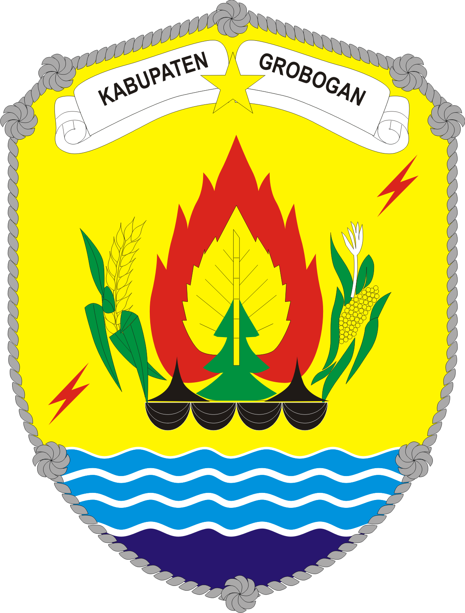

Tentang Kami
Facebook
Twitter
DKPD GROBOGAN
Profil
Data
Dokumen
Info
PPID
Buku Tamu
a
Selamat Datang di Situs Resmi Dinas Ketahanan Pangan Daerah Grobogan
Berita
Terbaru
Indeks»
Domba akan disembelih menjelang idul adha
kebutuhan kedelai di kabupaten grobogan meningkat
Kenaikan drastis harga lombok dikabupaten grobogan
ditemukan daging mengandung sakarin